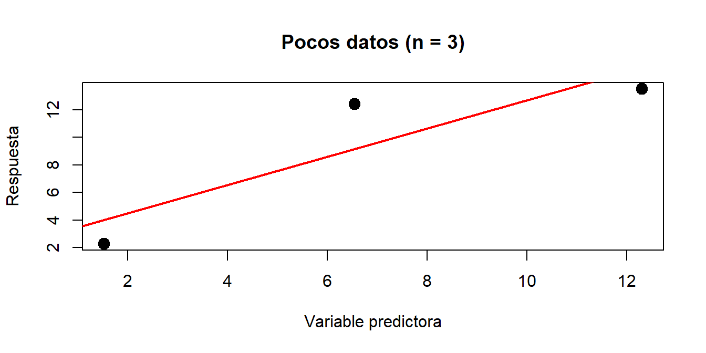
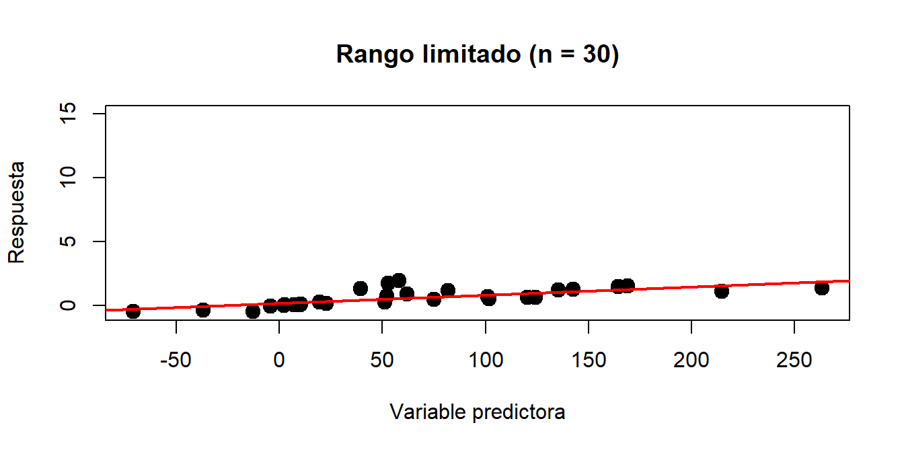
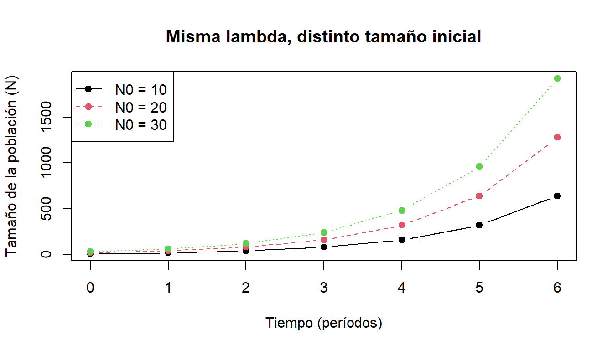
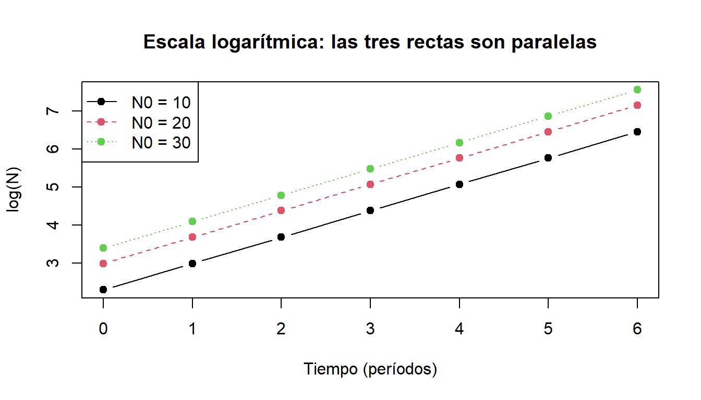
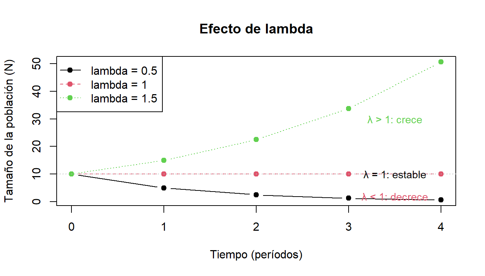

Modelos de crecimiento: por qué modelar y cómo crece una población estacional
1. Una pregunta desde Loja
Imaginen que en el bosque seco de Catamayo han monitoreado una población de insectos anuales durante cinco años. Los datos son estos:
| Año | Individuos |
|---|---|
| 1 | 200 |
| 2 | 230 |
| 3 | 198 |
| 4 | 235 |
| 5 | 220 |
Pregunta: ¿la población está creciendo, decreciendo o se mantiene estable?
A primera vista, los números fluctúan: suben, bajan, vuelven a subir. No es obvio si hay una tendencia. Para responder, necesitamos modelar. En esta lectura veremos por qué los ecólogos usan modelos, qué supuestos tienen, y cómo se construye el primer modelo de crecimiento: el geométrico.
2. ¿Por qué modelar?
Un modelo es una representación simplificada de la realidad. No pretende capturar todos los detalles de un sistema, sino capturar los procesos que consideramos importantes para responder una pregunta.
En ecología de poblaciones, los modelos sirven para:
- Predecir el tamaño futuro de una población.
- Entender qué procesos generan los patrones observados.
- Comparar escenarios (por ejemplo, con y sin intervención).
- Guiar decisiones de manejo y conservación.
NoteModelar no es “adivinar el futuro”
Un modelo no predice con certeza lo que pasará. Es una herramienta para explorar posibilidades y entender mecanismos. La frase del estadístico George Box lo resume: “Todos los modelos son incorrectos, pero algunos son útiles”.
3. El problema de la detección estadística
Antes de modelar, hay un problema práctico: ¿cómo sabemos si una población realmente está creciendo? Detectar una tendencia estadística depende de dos cosas:
- El número de observaciones. Con pocos datos, es difícil distinguir una tendencia real del ruido.
- El rango de la variable predictora. Si los valores de la variable predictora están muy agrupados, es difícil detectar una relación.

Conclusión: para detectar si una población crece, no basta con tener datos; hay que tener suficientes datos y suficiente variación en la variable predictora. Los modelos ayudan a superar esta limitación al imponer una estructura teórica a los datos.
4. Supuestos y limitaciones
Todo modelo tiene supuestos: condiciones que se asumen verdaderas para que el modelo funcione. Los supuestos son necesarios, pero también son la principal fuente de error cuando el modelo se aplica a la realidad.
Por ejemplo, un modelo simple de crecimiento puede asumir que:
- Todos los individuos son idénticos.
- No hay inmigración ni emigración.
- Los recursos son ilimitados.
- Las tasas de natalidad y mortalidad son constantes.
Ninguno de estos supuestos se cumple exactamente en la naturaleza. Pero eso no invalida el modelo: lo vuelve una aproximación que es útil en ciertos contextos y no en otros.
TipPregunta para el estudiante
Piensen en un modelo que hayan usado fuera de la ecología (por ejemplo, un mapa, una receta de cocina, un presupuesto). ¿Qué supuestos tiene? ¿En qué casos falla?
5. Denso-independiente vs. denso-dependiente
Los modelos de crecimiento se dividen en dos grandes familias según cómo tratan el efecto de la densidad.
5.1 Crecimiento denso-independiente
La tasa de crecimiento no depende del tamaño de la población. La población crece (o decrece) a la misma tasa sin importar cuántos individuos haya.
Ejemplo: una población de insectos que coloniza un ambiente nuevo y temporal, sin competencia ni depredadores.
Consecuencia: la población crece indefinidamente. En la práctica, esto solo puede ocurrir por un tiempo limitado, hasta que algún factor (recursos, espacio, depredadores) empiece a limitar el crecimiento.
5.2 Crecimiento denso-dependiente
La tasa de crecimiento sí depende del tamaño de la población. A medida que la población crece, los recursos se vuelven limitantes y la tasa de crecimiento disminuye.
Ejemplo: una población de árboles en un bosque, donde la competencia por luz y nutrientes reduce el crecimiento cuando hay muchos individuos.
Consecuencia: la población se estabiliza en un tamaño máximo, llamado capacidad de carga (\(K\)).
NoteLas dos familias de modelos
- Denso-independiente: geométrico (discreto) y exponencial (continuo).
- Denso-dependiente: logístico (continuo) y modelos discretos con denso-dependencia.
En esta lectura veremos el primero de los modelos denso-independientes: el geométrico.
6. Crecimiento geométrico
6.1 ¿Cuándo se usa?
El modelo geométrico describe poblaciones con reproducción estacional: los individuos se reproducen una vez al año (o en una estación), y luego mueren o permanecen sin reproducirse hasta la siguiente estación.
Ejemplos locales: - Insectos anuales del bosque seco de Catamayo. - Plantas anuales que germinan con las lluvias y mueren al final de la estación. - Aves que se reproducen una vez al año.
6.2 La tasa de incremento per cápita
Antes de escribir la ecuación, entendamos qué es la tasa de incremento per cápita. Es una medida de la velocidad con la que cambia el tamaño de la población, por individuo.
\[\text{Tasa de incremento} = \frac{N_{t+1}}{N_t}\]
Ejemplo: si una población pasa de 2 a 4 individuos en un año, la tasa es \(4/2 = 2\). Si pasa de 4 a 8, la tasa es \(8/4 = 2\). Si la tasa es constante, la población se duplica cada año.
NoteLa tasa de crecimiento vs. la tasa per cápita
- La tasa de crecimiento es el cambio absoluto en el número de individuos por unidad de tiempo: \(N_{t+1} - N_t\).
- La tasa per cápita es el cambio relativo: \((N_{t+1} - N_t) / N_t\), que es equivalente a \(N_{t+1}/N_t - 1\).
En el modelo geométrico usamos \(\lambda = N_{t+1}/N_t\), que incluye la renovación (1) más el crecimiento (\(\lambda - 1\)).
6.3 La ecuación
El modelo geométrico se escribe así:
\[N_{t+1} = \lambda \cdot N_t\]
Donde:
- \(N_t\) = tamaño de la población en el tiempo \(t\) (en número de individuos o de hembras).
- \(N_{t+1}\) = tamaño de la población en el tiempo \(t+1\) (el siguiente año o estación).
- \(\lambda\) (lambda) = tasa finita de crecimiento, o tasa de multiplicación por generación.
Interpretación de \(\lambda\): - \(\lambda > 1\): la población crece. - \(\lambda = 1\): la población se mantiene estable. - \(\lambda < 1\): la población decrece.
6.4 Ejemplo paso a paso: las mariposas
En tu presentación usaste el ejemplo de una población de mariposas que se duplica cada tres meses:
| Mes | \(N_t\) |
|---|---|
| Enero | 2 |
| Abril | 4 |
| Julio | 8 |
| Octubre | 16 |
| Enero (siguiente) | 32 |
Paso 1: calcular \(\lambda\) para cada intervalo.
\[\lambda = \frac{N_{t+1}}{N_t}\]
| Intervalo | \(\lambda\) |
|---|---|
| Enero → Abril | 4/2 = 2 |
| Abril → Julio | 8/4 = 2 |
| Julio → Octubre | 16/8 = 2 |
| Octubre → Enero | 32/16 = 2 |
Paso 2: concluir. \(\lambda = 2\) constante significa que la población se duplica cada tres meses. Con \(\lambda > 1\), la población crece.
TipPaso 1 para el estudiante
Con los datos de la tabla, calculen \(\lambda\) para el intervalo 1 → 2 si \(N_0 = 100\) y \(N_1 = 150\). ¿Se mantiene el valor de \(\lambda\)?
6.5 Proyección a futuro
Si \(\lambda\) es constante, podemos proyectar la población a cualquier período:
\[N_t = N_0 \cdot \lambda^t\]
Ejemplo: con \(N_0 = 2\) y \(\lambda = 2\) (mariposas cada 3 meses):
| Período (3 meses) | \(N_t\) |
|---|---|
| 0 | 2 |
| 1 | 4 |
| 2 | 8 |
| 3 | 16 |
| 4 | 32 |
| 8 | 512 |
| 12 (3 años) | 8.192 |
TipPaso 2 para el estudiante
Con \(N_0 = 100\) y \(\lambda = 1,5\), calculen \(N_{15}\). ¿Cuántos individuos habría en el año 15? ¿Es realista?
6.6 Efecto del tamaño inicial
Si dos poblaciones crecen con la misma \(\lambda\), pero parten de tamaños iniciales distintos, ¿crecen a la misma tasa?

Conclusión: las tres poblaciones crecen a la misma tasa (\(\lambda = 2\)), pero la magnitud del incremento es mayor en la población más grande. Si graficamos en escala logarítmica, las tres rectas son paralelas.

TipPaso 3 para el estudiante
Si una población con \(N_0 = 50\) crece con \(\lambda = 1,3\), ¿cuántos individuos habrá en el año 5? ¿Y si \(N_0 = 100\)?
6.7 Efecto de \(\lambda\)
\(\lambda\) tiene un efecto enorme sobre el crecimiento. Pequeñas diferencias en \(\lambda\) producen grandes diferencias en el tamaño futuro.

6.8 Tasa promedio: media aritmética vs. media geométrica
En la práctica, \(\lambda\) no es constante: varía entre años. ¿Qué valor usar para proyectar?
Ejemplo: una población de ninfálidos con estos datos: 100, 50, 75.
Las tasas son: \(\lambda_1 = 50/100 = 0,5\) y \(\lambda_2 = 75/50 = 1,5\).
- Media aritmética: \((0,5 + 1,5)/2 = 1,0\). Proyectar con \(\lambda = 1\) daría una población estable.
- Media geométrica: \(\sqrt{0,5 \cdot 1,5} = \sqrt{0,75} \approx 0,866\). Proyectar con \(\lambda = 0,866\) daría una población en decrecimiento.
¿Cuál es correcta? La media geométrica es más adecuada para tasas de crecimiento, porque el crecimiento es multiplicativo, no aditivo. La media aritmética sobreestima el crecimiento cuando hay variación.
TipPaso 4 para el estudiante
Con los datos de ninfálidos (100, 50, 75), calculen la media aritmética y la media geométrica. ¿Cuál se acerca más al tamaño real en el año 3 (75)?
6.9 Tasa finita (\(\lambda\)) y tasa intrínseca (\(r\))
En la lectura 1.3 vimos la tasa intrínseca de crecimiento \(r\). La relación con \(\lambda\) es:
\[r = \ln(\lambda)\] \[\lambda = e^r\]
Interpretación: - Si \(\lambda = 1,5\), entonces \(r = \ln(1,5) \approx 0,405\) por año. - Si \(\lambda = 1\), entonces \(r = 0\). - Si \(\lambda < 1\), entonces \(r < 0\).
Ejemplo: si una población de insectos tiene \(\lambda = 1,5\), su \(r\) es \(\ln(1,5) \approx 0,405\). Si una población de aves tiene \(r = 0,1\), su \(\lambda\) es \(e^{0,1} \approx 1,105\).
TipPaso 5 para el estudiante
Si una población tiene \(\lambda = 0,8\), ¿cuál es su \(r\)? ¿La población crece o decrece?
7. Limitaciones del modelo geométrico
El modelo geométrico es útil para poblaciones estacionales, pero tiene limitaciones:
- Asume que \(\lambda\) es constante. En la realidad, \(\lambda\) varía con el clima, los recursos y la densidad.
- Asume que todos los individuos son idénticos. No distingue entre juveniles y adultos.
- No incluye denso-dependencia. La población crece indefinidamente.
- No incluye inmigración ni emigración. Asume una población cerrada.
A pesar de estas limitaciones, el modelo geométrico es útil como punto de partida y como herramienta de exploración.
8. Aplicación local: insectos anuales del bosque seco de Catamayo
En el bosque seco de Catamayo, muchas especies de insectos tienen ciclos de vida anuales: emergen con las lluvias, se reproducen y mueren al final de la estación. El modelo geométrico es adecuado para describir estas poblaciones.
Pregunta ecológica: ¿cómo cambia el tamaño de una población de insectos anuales de un año a otro? ¿Qué factores hacen que \(\lambda\) varíe?
Ejemplo hipotético: si una población de escarabajos tiene \(\lambda = 1,2\) en años húmedos y \(\lambda = 0,8\) en años secos, el tamaño de la población fluctúa enormemente entre años. Esto es típico de ambientes estacionales.
Conexión con el cambio climático: si el cambio climático reduce la frecuencia de años húmedos, el \(\lambda\) promedio podría caer por debajo de 1, y la población podría decrecer a largo plazo.
9. Síntesis y puente
Los modelos son representaciones simplificadas de la realidad, útiles para predecir, entender y comparar. Se dividen en denso-independientes (la tasa de crecimiento no depende de la densidad) y denso-dependientes (sí depende).
El modelo geométrico describe poblaciones con reproducción estacional:
\[N_{t+1} = \lambda \cdot N_t\]
Con \(\lambda > 1\) la población crece; con \(\lambda < 1\) decrece. La tasa \(\lambda\) se relaciona con \(r\) mediante \(r = \ln(\lambda)\).
Importante: cuando \(\lambda\) varía entre años, la media geométrica es más adecuada que la media aritmética para proyectar la población.
En la próxima lectura veremos el modelo exponencial continuo, que describe poblaciones con reproducción continua, y luego el modelo logístico, que incorpora la denso-dependencia.
Pregunta final: ¿qué especie de Loja conoce que tenga reproducción estacional? ¿Cómo estimarían su \(\lambda\)?
10. Para profundizar
- Gotelli, N. J. (2008). A Primer of Ecology. 4th ed. Sinauer. Capítulo 1.
- Begon, M., Harper, J. L., & Townsend, C. R. (2006). Ecology: From Individuals to Ecosystems. Blackwell. Capítulo 6.
- Vandermeer, J., & Goldberg, D. E. (2013). Population Ecology: First Principles. Princeton University Press. Capítulo 2.
11. Preguntas de comprensión
- ¿Por qué los ecólogos usan modelos? Menciona tres razones.
- ¿Qué dos factores afectan la detección estadística de una tendencia poblacional?
- ¿Cuál es la diferencia entre un modelo denso-independiente y uno denso-dependiente?
- ¿En qué tipo de poblaciones se usa el modelo geométrico? Da un ejemplo local.
- Si una población tiene \(\lambda = 1,2\), ¿crece o decrece? ¿Cuánto crece por año?
- ¿Cómo se relacionan \(\lambda\) y \(r\)? Calcula \(r\) para \(\lambda = 1,5\).
- Si \(\lambda = 0,9\), ¿cuál es el destino de la población a largo plazo?
- ¿Qué limitaciones tiene el modelo geométrico? Menciona al menos tres.
- Con \(N_0 = 50\) y \(\lambda = 1,3\), ¿cuántos individuos habrá en el año 5?
- ¿Por qué la media geométrica es más adecuada que la media aritmética para promediar \(\lambda\)?
- ¿Cómo se relaciona el modelo geométrico con el concepto de fitness que vimos en la lectura 1.2?